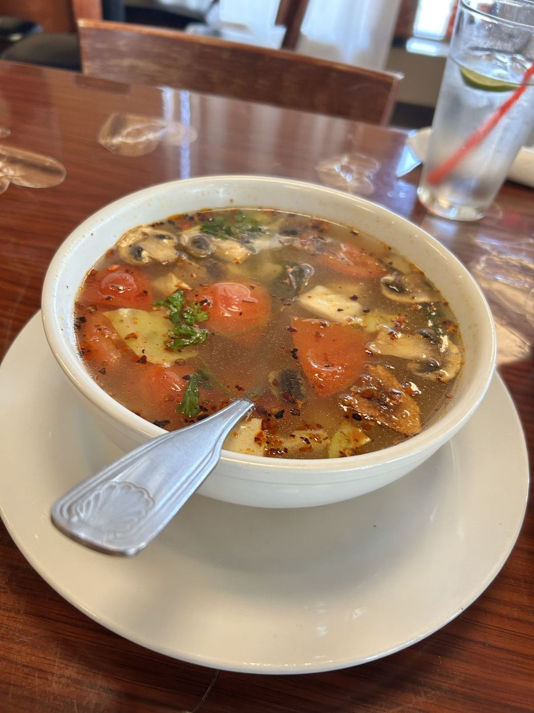
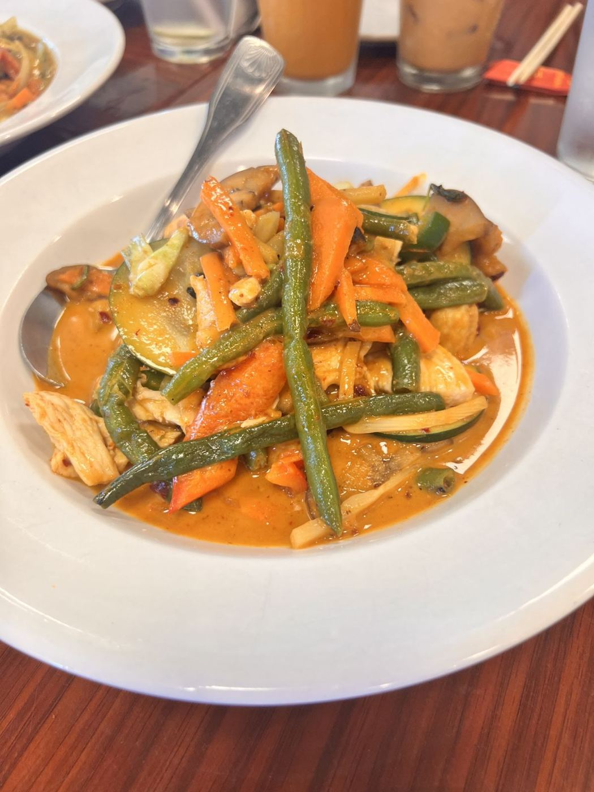
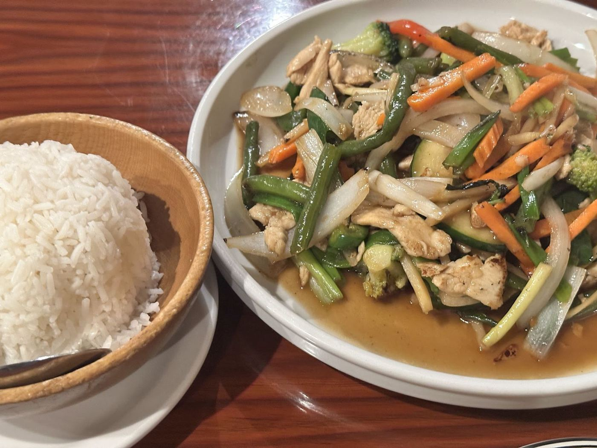

Family owned · Richardson, TX
A Dallas classic, still family run.
Huge portions, authentic flavor and lots of vegetables, tucked away on Coit Rd near Belt Line.
4.5★ · 486 Google reviews
Guest favorites
Pad Thai"Honestly the best pad Thai I’ve ever had," one guest wrote.
Spring rolls & Chan noodlesHighly recommended by regulars.
Vegetable-forwardOriginally completely vegetarian, with chicken as the only meat and more vegetables than usual.
Thai coffeeA great-value classic.



Regulars for decades
Hands down the best Thai I’ve ever had! Amazing food and friendly service ❤️ highly recommend the spring rolls and Chan noodles!
What a surprise to discover this Thai restaurant. Every dish has been made to perfection. I even had a special two egg omelette made for me.
We were looking for a Thai restaurant and thankfully found this one. We were instantly impressed by the service and amazed at the food. Oh my goodness, the portions are ginormous and the taste matches it. This was honestly the best pad Thai I’ve ever had. We will definitely be coming back.
Come hungry
101 S Coit Rd #401, Richardson, TX 75080